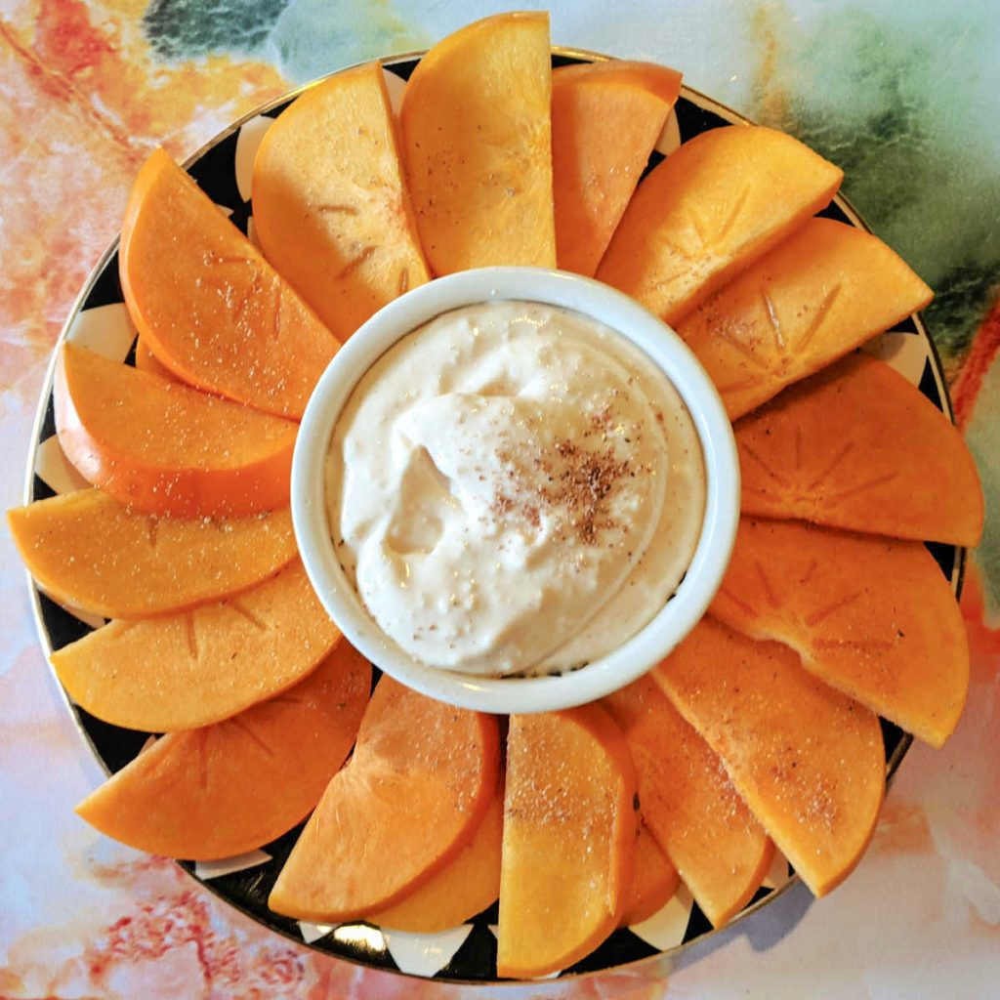

French Toast

This is my aunts recipe and its the perfect addition to fruit platters!
You will only need two ingredients for this recipe.
If you are ever wondering how to spruce up a fruit platter this is the perfect dip to try.
Ingredients
- 1 Tub of Cool whip
- 1 Tsp Nutmeg
Steps
- Remove cool whip from container and place in a larger bowl.
- Add nutmeg.
- Mix until well combined.
- Keep cool unitl ready for use.
Home